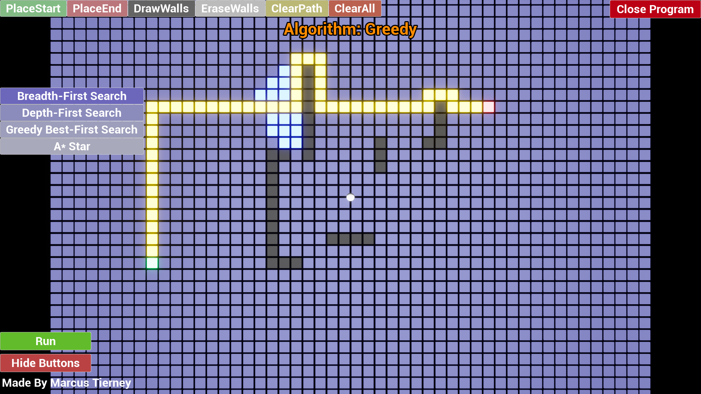
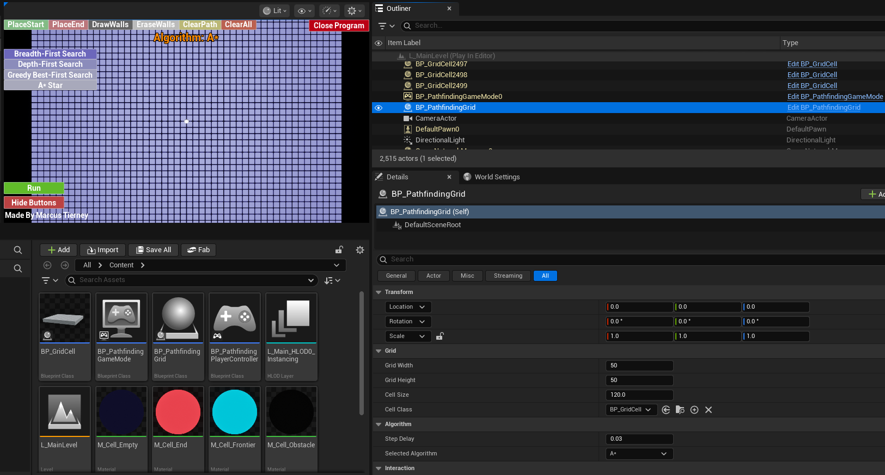
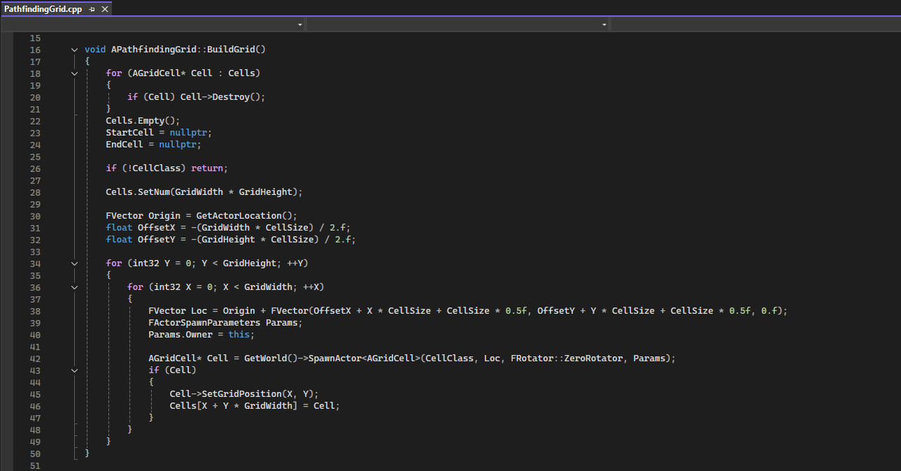

Pathfinding Visualizer

A grid-based pathfinding visualizer featuring BFS, DFS, Greedy, and A* algorithms. Users can interactively set start and end points, place walls, and watch the algorithms explore the grid in real-time.
Responsibilities: Solo Developer
Tech: C++, Blueprints
Process
Set Up (Uses Grid and Cell Blueprint System)

Grid Building and Algorithm Implementation Inside PathfindingGird.cpp File

Summary of Contributions
Designed and implemented a modular pathfinding system in Unreal Engine 5 using C++, supporting multiple search algorithms including BFS, DFS, Greedy Best-First, and A*.
Built a step-by-step visualization system using Unreal's timer framework to animate each algorithm's exploration and final path reconstruction allowing for direct visual comparison between algorithms.
Implemented all pathfinding algorithms in C++, queues for BFS, stacks for DFS, and priority-based open lists with closed sets for Greedy and A*.
Developed a correct and efficient A* implementation using 2D array-indexed GScore and parent tracking grids, with F-score tiebreaking via a G-score to stop exploring equivalent paths in the same way.
What I Learned
How Data Structures Directly Affect Behavior
Switching BFS from a queue to a stack turns it into DFS. Sorting that stack by a heuristic turns it into Greedy. Adding a cost tracker turns Greedy into A*. Working through each algorithm in the same codebase made it clear that the choice of data structure is the algorithm.
Understanding Algorithm Behavior Through Visualization
This project helped me better understand how different pathfinding algorithms behave by visualizing them in real time. Seeing how algorithms like BFS, DFS, Greedy, and A* explore the grid made it easier to compare their efficiency, decision-making, and path quality. It showed how factors like heuristics and data structures affect performance, and gave me a more intuitive understanding beyond just reading the code.